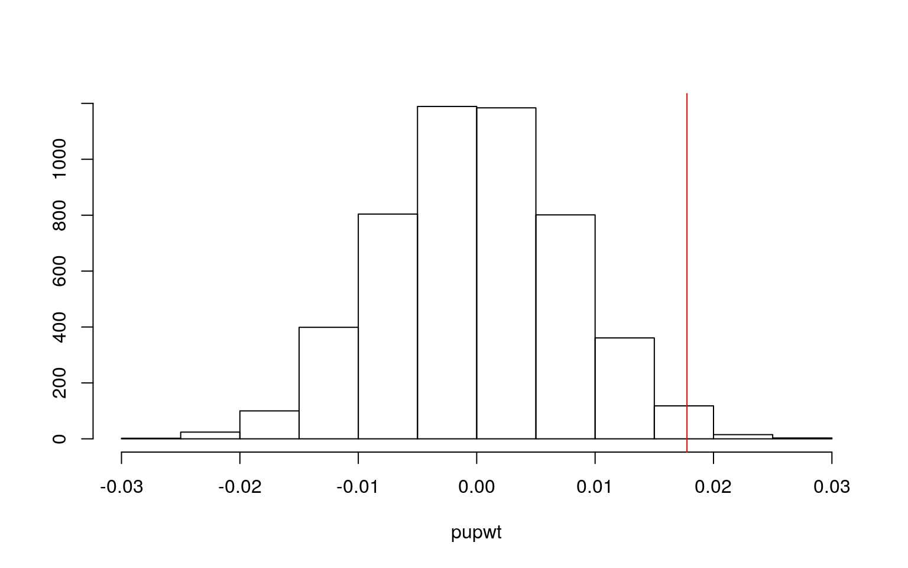
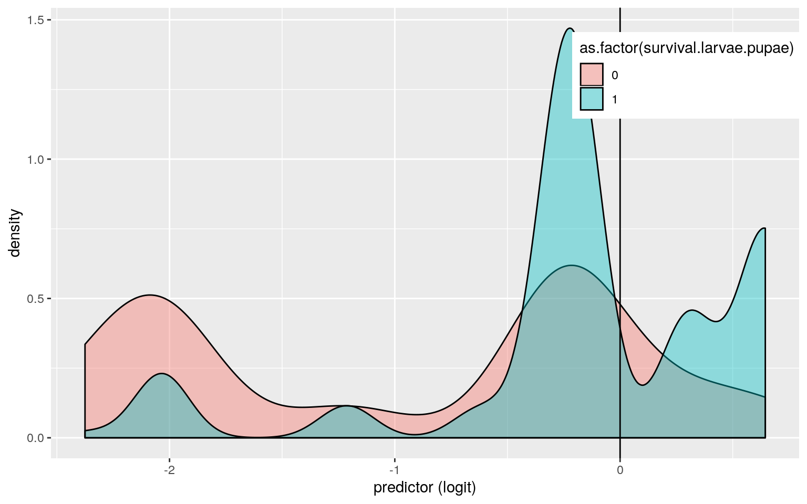
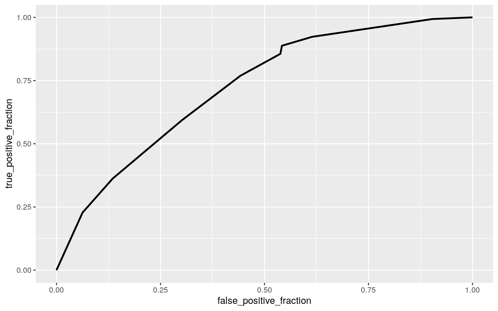

class_diag<-function(probs,truth){
tab<-table(factor(probs>.5,levels=c("FALSE","TRUE")),truth)
acc=sum(diag(tab))/sum(tab)
sens=tab[2,2]/colSums(tab)[2]
spec=tab[1,1]/colSums(tab)[1]
ppv=tab[2,2]/rowSums(tab)[2]
if(is.numeric(truth)==FALSE & is.logical(truth)==FALSE) truth<-as.numeric(truth)-1
#CALCULATE EXACT AUC
ord<-order(probs, decreasing=TRUE)
probs <- probs[ord]; truth <- truth[ord]
TPR=cumsum(truth)/max(1,sum(truth))
FPR=cumsum(!truth)/max(1,sum(!truth))
dup<-c(probs[-1]>=probs[-length(probs)], FALSE)
TPR<-c(0,TPR[!dup],1); FPR<-c(0,FPR[!dup],1)
n <- length(TPR)
auc<- sum( ((TPR[-1]+TPR[-n])/2) * (FPR[-1]-FPR[-n]) )
data.frame(acc,sens,spec,ppv,auc)
}library(readxl)
hcharperf <- read_excel("hcharperf.xlsx")
perf<-hcharperf%>%
select(host,condition,pupal.weight,sex,survival.larvae.pupae, survival.pupae.adult,time.larvae.adult)
head(perf)## # A tibble: 6 x 7
## host condition pupal.weight sex survival.larvae.pupae
survival.pupae.adult time.larvae.adult
## <chr> <chr> <dbl> <chr> <dbl> <dbl> <dbl>
## 1 P.sub 16.oz 0.304 F 1 1 25
## 2 P.sub 16.oz NA <NA> 0 NA NA
## 3 P.sub 16.oz NA <NA> 0 NA NA
## 4 P.lut 16.oz 0.263 M 1 1 20
## 5 P.lut 16.oz 0.315 F 1 1 25
## 6 P.lut 16.oz 0.354 F 1 1 25glimpse(perf)## Observations: 856
## Variables: 7
## $ host <chr> "P.sub", "P.sub", "P.sub", "P.lut",
"P.lut", "P.lut", "P.lut", "P.s…
## $ condition <chr> "16.oz", "16.oz", "16.oz", "16.oz",
"16.oz", "16.oz", "16.oz", "16.…
## $ pupal.weight <dbl> 0.304, NA, NA, 0.263, 0.315, 0.354,
0.275, 0.323, 0.264, NA, NA, NA…
## $ sex <chr> "F", NA, NA, "M", "F", "F", "M", "F", NA,
NA, NA, NA, NA, NA, NA, N…
## $ survival.larvae.pupae <dbl> 1, 0, 0, 1, 1, 1, 1, 1, 1,
0, 0, 0, 0, 0, 0, 0, 0, 0, 0, 0, 0, 0, 0…
## $ survival.pupae.adult <dbl> 1, NA, NA, 1, 1, 1, 1, 1,
0, NA, NA, NA, NA, NA, NA, NA, NA, NA, NA…
## $ time.larvae.adult <dbl> 25, NA, NA, 20, 25, 25, 21,
24, NA, NA, NA, NA, NA, NA, NA, NA, NA,…This dataset includes performance data on zebra longwing butterflies (species: Heliconius charitonia) throughout their life cycle, as obtained from the Brackenridge Field Laboratory at UT Austin. The selected variables are host (Passiflora host plant species that the larvae were fed with), rearing condition (16 ounce cup or mesh bag), pupal.weight (mass of pupae in grams), sex (male or female), survival.larvae.pupae (binary variable of whether the larva survived to pupation, with 1 for survival), survival.pupae.adult (binary variable of whether the pupa survived to adulthood/butterfly stage, with 1 for survival), and time.larvae.adult (number of days from caterpillar to adult butterfly). There are 856 observations.
perf1<-perf%>%na.omit() #NAs omitted
perfman<-manova(cbind(pupal.weight,time.larvae.adult)~condition,data=perf1)
summary(perfman)## Df Pillai approx F num Df den Df Pr(>F)
## condition 1 0.0054205 0.654 2 240 0.5209
## Residuals 241The overall one-way MANOVA is not significant, so mean pupal weight and mean time from larvae to adult do not differ by rearing condition (Pillai= 0.005, F(2,240)=0.654, p > 0.05). The assumptions include: random independently sampled observations, multivariate normality of DVs, homogeneity of within-group covariance matrices, linearity among DVs, no extreme outliers, and no multicollinearity. Some but not all of these assumptions are likely to have been met due to the fact that there are so many assumptions that they are hard to meet.
set.seed(348)
pupwt <- vector()
for(i in 1:5000){
newdat<-data.frame(weight=sample(perf1$pupal.weight),sex=perf1$sex)
pupwt[i]<-mean(newdat[newdat$sex=="F",]$weight)-
mean(newdat[newdat$sex=="M",]$weight)}
perf1%>%group_by(sex)%>%summarize(means=mean(pupal.weight))%>%summarize(`mean_diff:`=diff(means))## # A tibble: 1 x 1
## `mean_diff:`
## <dbl>
## 1 -0.0178{hist(pupwt,main="",ylab=""); abline(v = 0.01775884,col="red")}
t.test(data=perf1,pupal.weight~sex)##
## Welch Two Sample t-test
##
## data: pupal.weight by sex
## t = 2.2148, df = 188.18, p-value = 0.02798
## alternative hypothesis: true difference in means is not
equal to 0
## 95 percent confidence interval:
## 0.001941341 0.033576336
## sample estimates:
## mean in group F mean in group M
## 0.3514949 0.3337361I generated a distribution of 5000 mean differences on randomized data and performed a Welch Two Sample t-test. The null hypothesis is that the mean weights of male and female pupae do not differ. The alternative hypothesis is that there is a significant difference in the mean pupal weights between sexes. Results show that the sexes have a significant mean difference in pupal weights (t = 2.21, df = 188, p < 0.05).
library(lmtest)
library(sandwich)
perffit<-lm(time.larvae.adult ~ host*sex, data=perf)
summary(perffit)##
## Call:
## lm(formula = time.larvae.adult ~ host * sex, data =
perf)
##
## Residuals:
## Min 1Q Median 3Q Max
## -8.4000 -2.3243 -0.6221 2.2515 13.6757
##
## Coefficients:
## Estimate Std. Error t value Pr(>|t|)
## (Intercept) 28.1333 0.9455 29.756 < 2e-16 ***
## hostP.bi -3.3891 1.0981 -3.086 0.00227 **
## hostP.foet 3.6167 1.6031 2.256 0.02500 *
## hostP.inc 3.3667 2.0606 1.634 0.10365
## hostP.lut -3.1810 1.2379 -2.570 0.01081 *
## hostP.sub -0.5083 1.6031 -0.317 0.75146
## sexM -1.6986 1.2153 -1.398 0.16355
## hostP.bi:sexM 2.0890 1.4306 1.460 0.14558
## hostP.foet:sexM -2.5514 2.1975 -1.161 0.24681
## hostP.inc:sexM 2.5986 2.7406 0.948 0.34403
## hostP.lut:sexM 2.0705 1.5741 1.315 0.18969
## hostP.sub:sexM 4.4236 1.9554 2.262 0.02461 *
## ---
## Signif. codes: 0 '***' 0.001 '**' 0.01 '*' 0.05 '.' 0.1
' ' 1
##
## Residual standard error: 3.662 on 232 degrees of freedom
## (612 observations deleted due to missingness)
## Multiple R-squared: 0.2749, Adjusted R-squared: 0.2405
## F-statistic: 7.996 on 11 and 232 DF, p-value: 8.8e-12bptest(perffit)##
## studentized Breusch-Pagan test
##
## data: perffit
## BP = 15.913, df = 11, p-value = 0.1444coeftest(perffit, vcov = vcovHC(perffit))##
## t test of coefficients:
##
## Estimate Std. Error t value Pr(>|t|)
## (Intercept) 28.13333 0.80728 34.8495 < 2.2e-16 ***
## hostP.bi -3.38915 0.88056 -3.8488 0.0001535 ***
## hostP.foet 3.61667 1.53486 2.3564 0.0192879 *
## hostP.inc 3.36667 2.46904 1.3636 0.1740295
## hostP.lut -3.18095 1.03396 -3.0765 0.0023463 **
## hostP.sub -0.50833 1.62762 -0.3123 0.7550803
## sexM -1.69855 1.13096 -1.5019 0.1344931
## hostP.bi:sexM 2.08898 1.29807 1.6093 0.1089118
## hostP.foet:sexM -2.55145 2.29540 -1.1115 0.2674835
## hostP.inc:sexM 2.59855 4.46358 0.5822 0.5610190
## hostP.lut:sexM 2.07049 1.48364 1.3956 0.1641831
## hostP.sub:sexM 4.42355 2.06231 2.1449 0.0329959 *
## ---
## Signif. codes: 0 '***' 0.001 '**' 0.01 '*' 0.05 '.' 0.1
' ' 1Based on the intercept, larvae fed with P. affinis have an average time to adulthood of 28.13 days without taking into account sex. Larvae fed with P.biflora reach adulthood on average -3.39 days less than with P.affinis. P.foetida and P.incarnata increase the time to reach adulthood by 3.62 and 3.37 days respectively, compared to P.aff; while P.lutea and P.suberosa decrease time to reach adulthood by -3.18 and -0.51 days respectively, compared to P.aff. Being a male decreases time to adulthood by 1.7 days. When taking into account the sex of the larvae, there is a difference in slopes of 2.09 between P.aff and P.bi, -2.55 between P.aff and P.foet, 2.60 between P.aff and P.inc, 2.07 between P.aff and P.lut, and 4.42 between P.aff and P.sub. A linear graph could not be made since the two predictor variables are categorical. Homoskedasticity is met. Null hypothesis of the Breusch-Pagan test was not rejected (BP = 15.913, df = 11, p-value > 0.05). Linearity not checked because predictor variables are categorical. After recomputing regression results with robust standard errors, significance remained the same. The intercept/hostP.aff, hostP.bi, hostP.foet, hostP.lut, and hostP.sub:sexM coefficients were all significant (p<0.05). The model explains ~24.05% of the variation in the outcome.
#bootstrap
perffit<-lm(time.larvae.adult ~ host*sex, data=perf)
summary(perffit)##
## Call:
## lm(formula = time.larvae.adult ~ host * sex, data =
perf)
##
## Residuals:
## Min 1Q Median 3Q Max
## -8.4000 -2.3243 -0.6221 2.2515 13.6757
##
## Coefficients:
## Estimate Std. Error t value Pr(>|t|)
## (Intercept) 28.1333 0.9455 29.756 < 2e-16 ***
## hostP.bi -3.3891 1.0981 -3.086 0.00227 **
## hostP.foet 3.6167 1.6031 2.256 0.02500 *
## hostP.inc 3.3667 2.0606 1.634 0.10365
## hostP.lut -3.1810 1.2379 -2.570 0.01081 *
## hostP.sub -0.5083 1.6031 -0.317 0.75146
## sexM -1.6986 1.2153 -1.398 0.16355
## hostP.bi:sexM 2.0890 1.4306 1.460 0.14558
## hostP.foet:sexM -2.5514 2.1975 -1.161 0.24681
## hostP.inc:sexM 2.5986 2.7406 0.948 0.34403
## hostP.lut:sexM 2.0705 1.5741 1.315 0.18969
## hostP.sub:sexM 4.4236 1.9554 2.262 0.02461 *
## ---
## Signif. codes: 0 '***' 0.001 '**' 0.01 '*' 0.05 '.' 0.1
' ' 1
##
## Residual standard error: 3.662 on 232 degrees of freedom
## (612 observations deleted due to missingness)
## Multiple R-squared: 0.2749, Adjusted R-squared: 0.2405
## F-statistic: 7.996 on 11 and 232 DF, p-value: 8.8e-12samp_distn<-replicate(5000, {
boot_dat <- sample_frac(perf, replace=T)
fit <- glm(time.larvae.adult ~ host*sex, data=boot_dat)
coef(fit)
})
#samp_distn%>%t%>%as.data.frame%>%summarize_all(sd,na.rm=T)The results of the bootstrapped standard errors changed compared to the original standard errors, so the significance of some of the p values would also change. For instance, the original standard errors for the significant values of coefficients were 0.946 for P.aff, 1.098 for P.bi, 1.603 for P.foet, 1.238 for P.lut, and 1.955 for hostP.sub:sexM. The bootstrapped SEs were 0.777 for P.aff, 0.855 for P.bi, 1.469 for P.foet, 1.023 for P.lut, and 2.031 for hostP.sub:sexM.
#logistic regression with binary variable
perf2<-perf%>%filter(!is.na(condition))%>%filter(host!="P.fil",condition!="Pop up")%>%
mutate(condition=recode(condition,"16 oz"="16.oz"))
#removed irrelevant variables and renamed redundant label
perf2## # A tibble: 823 x 7
## host condition pupal.weight sex survival.larvae.pupae
survival.pupae.adult time.larvae.adult
## <chr> <chr> <dbl> <chr> <dbl> <dbl> <dbl>
## 1 P.sub 16.oz 0.304 F 1 1 25
## 2 P.sub 16.oz NA <NA> 0 NA NA
## 3 P.sub 16.oz NA <NA> 0 NA NA
## 4 P.lut 16.oz 0.263 M 1 1 20
## 5 P.lut 16.oz 0.315 F 1 1 25
## 6 P.lut 16.oz 0.354 F 1 1 25
## 7 P.lut 16.oz 0.275 M 1 1 21
## 8 P.sub 16.oz 0.323 F 1 1 24
## 9 P.sub 16.oz 0.264 <NA> 1 0 NA
## 10 P.foet 16.oz NA <NA> 0 NA NA
## # … with 813 more rowslibrary(lmtest)
logfit<-glm(survival.larvae.pupae~host+condition, data=perf2, family="binomial")
summary(logfit)##
## Call:
## glm(formula = survival.larvae.pupae ~ host + condition,
family = "binomial",
## data = perf2)
##
## Deviance Residuals:
## Min 1Q Median 3Q Max
## -1.4605 -1.0654 -0.4958 1.0514 2.2199
##
## Coefficients:
## Estimate Std. Error z value Pr(>|z|)
## (Intercept) -0.269333 0.179083 -1.504 0.132593
## hostP.bi 0.913919 0.261348 3.497 0.000471 ***
## hostP.foet -1.764958 0.284655 -6.200 5.63e-10 ***
## hostP.inc -0.943690 0.387307 -2.437 0.014828 *
## hostP.lut 0.103348 0.240259 0.430 0.667085
## hostP.sub -0.006438 0.282603 -0.023 0.981825
## conditionbag -0.340819 0.248747 -1.370 0.170643
## ---
## Signif. codes: 0 '***' 0.001 '**' 0.01 '*' 0.05 '.' 0.1
' ' 1
##
## (Dispersion parameter for binomial family taken to be 1)
##
## Null deviance: 1092.32 on 822 degrees of freedom
## Residual deviance: 953.29 on 816 degrees of freedom
## AIC: 967.29
##
## Number of Fisher Scoring iterations: 4coeftest(logfit)##
## z test of coefficients:
##
## Estimate Std. Error z value Pr(>|z|)
## (Intercept) -0.2693329 0.1790830 -1.5040 0.1325926
## hostP.bi 0.9139189 0.2613476 3.4969 0.0004706 ***
## hostP.foet -1.7649582 0.2846554 -6.2003 5.634e-10 ***
## hostP.inc -0.9436897 0.3873069 -2.4365 0.0148284 *
## hostP.lut 0.1033478 0.2402588 0.4302 0.6670851
## hostP.sub -0.0064379 0.2826030 -0.0228 0.9818252
## conditionbag -0.3408186 0.2487470 -1.3701 0.1706428
## ---
## Signif. codes: 0 '***' 0.001 '**' 0.01 '*' 0.05 '.' 0.1
' ' 1exp(coef(logfit))## (Intercept) hostP.bi hostP.foet hostP.inc hostP.lut
hostP.sub conditionbag
## 0.7638889 2.4940773 0.1711939 0.3891892 1.1088770
0.9935828 0.7111879prob<-predict(logfit,type="response")
table(predict=as.numeric(prob>.5),truth=perf2$survival.larvae.pupae)%>%addmargins #matrix## truth
## predict 0 1 Sum
## 0 442 199 641
## 1 69 113 182
## Sum 511 312 823class_diag(prob,perf2$survival.larvae.pupae)## acc sens spec ppv auc
## 1 0.6743621 0.3621795 0.8649706 0.6208791 0.7239074perf2$logit<-predict(logfit,type="link")
perf2%>%ggplot()+geom_density(aes(logit,fill=as.factor(survival.larvae.pupae)), alpha=.4)+
theme(legend.position=c(.85,.85))+geom_vline(xintercept=0)+
xlab("predictor (logit)")
library(plotROC)
ROCplot<-ggplot(perf2)+geom_roc(aes(d=survival.larvae.pupae,m=prob), n.cuts=0)
ROCplot
calc_auc(ROCplot)## PANEL group AUC
## 1 1 -1 0.7239074set.seed(1234)
k=10
data1<-perf2[sample(nrow(perf2)),]
folds<-cut(seq(1:nrow(perf2)),breaks=k,labels=F)
diags<-NULL
for(i in 1:k){
train<-data1[folds!=i,]
test<-data1[folds==i,]
truth<-test$survival.larvae.pupae
fit<- glm(survival.larvae.pupae~host+condition, data=train, family="binomial")
probs<- predict(fit,newdata = test,type="response")
diags<-rbind(diags,class_diag(probs,truth))
}
summarize_all(diags,mean)## acc sens spec ppv auc
## 1 0.6742874 0.3625351 0.8646989 0.6145357 0.7139844Controlling for condition, host plants P.bi, P.foet, and P.inc have a significant effect on the survival of larvae to the pupal stage (p < 0.05). Controlling for host plant, condition does not have a significant effect on survival (p > 0.05). Odds of survival are much higher on P. bi compared to the rest of the plant species. The AUC is 0.724, which is considered a fair area under the curve. The accuracy is 0.674, sensitivity is 0.362, the specificity is 0.865, and ppv is 0.621. After 10-fold CV, the AUC is 0.714, accuracy is 0.674, and sensitivity is 0.363.
perf3<-perf1%>%select(-survival.larvae.pupae,-survival.pupae.adult)
#removed the binary columns for this part since it contained
#all those who survived to adulthood, making the values all ones
library(glmnet)
set.seed(1234)
y<-as.matrix(perf3$time.larvae.adult)
x<-model.matrix(time.larvae.adult~.,data=perf3)
head(x)## (Intercept) hostP.bi hostP.foet hostP.inc hostP.lut
hostP.sub conditionbag pupal.weight sexM
## 1 1 0 0 0 0 1 0 0.304 0
## 2 1 0 0 0 1 0 0 0.263 1
## 3 1 0 0 0 1 0 0 0.315 0
## 4 1 0 0 0 1 0 0 0.354 0
## 5 1 0 0 0 1 0 0 0.275 1
## 6 1 0 0 0 0 1 0 0.323 0cv<-cv.glmnet(x,y, family = "gaussian")
#changed family from binomial since the y variable is continuous
lasso1<-glmnet(x,y, family = "gaussian",lambda=cv$lambda.1se)
coef(lasso1)## 10 x 1 sparse Matrix of class "dgCMatrix"
## s0
## (Intercept) 28.1164275
## (Intercept) .
## hostP.bi -0.9019488
## hostP.foet 0.7430327
## hostP.inc 2.5886203
## hostP.lut -0.3035254
## hostP.sub 1.2809480
## conditionbag .
## pupal.weight -4.5145184
## sexM .lasso_prob<-predict(lasso1, newx=x, type="response")
table(predicted=lasso_prob>.5,survival=perf3$time.larvae.adult)## survival
## predicted 18 19 20 21 22 23 24 25 26 27 28 29 30 31 32
33 34 35 36 37 38 39 40 41
## TRUE 1 1 2 13 19 27 31 25 33 6 18 17 11 9 6 9 3 2 2 2 2
2 1 1class_diag(lasso_prob,perf3$time.larvae.adult)## acc sens spec ppv auc
## 19 0.004115226 1 0 0.004115226 1fitlasso<-glm(time.larvae.adult~host+pupal.weight, data=perf3, family = "gaussian")
fitlasso##
## Call: glm(formula = time.larvae.adult ~ host +
pupal.weight, family = "gaussian",
## data = perf3)
##
## Coefficients:
## (Intercept) hostP.bi hostP.foet hostP.inc hostP.lut
hostP.sub pupal.weight
## 30.785 -2.214 2.023 4.921 -1.838 2.034 -10.519
##
## Degrees of Freedom: 242 Total (i.e. Null); 236 Residual
## Null Deviance: 4290
## Residual Deviance: 3169 AIC: 1330probsl<-predict(fitlasso,type="response")
set.seed(1234)
k=10
datalasso<-perf3[sample(nrow(perf3)),]
folds<-cut(seq(1:nrow(perf3)),breaks=k,labels=F)
diags<-NULL
for(i in 1:k){
train<-datalasso[folds!=i,]
test<-datalasso[folds==i,]
truth<-test$time.larvae.adult
fit<- glm(time.larvae.adult~host+pupal.weight, data=train)
probs<- predict(fit,newdata = test,type="response")
diags<-rbind(diags,class_diag(probs,truth))
}
summarize_all(diags,mean)## acc sens spec ppv auc
## 1 0.0785 1 0 0.0785 1The variables retained are hostP.bi, hostP.foet, hostP.inc, hostP.lut, hostP.sub, and pupal.weight. The residual deviance is 3169?